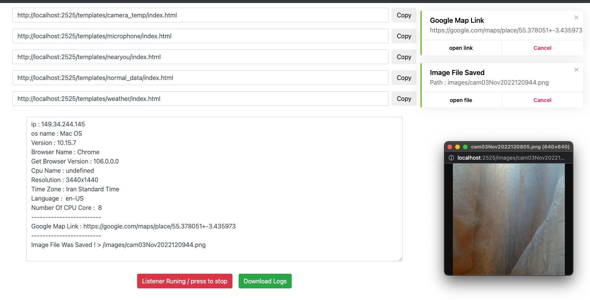

Testa a superfície de engenharia social das tuas equipas
Storm-Breaker é uma ferramenta de segurança ofensiva com painel web para demonstrar, em ambientes autorizados, como páginas maliciosas podem solicitar informação de dispositivo, localização, câmara e microfone. Esta página é a documentação do projeto.

O que a ferramenta demonstra
Cada módulo ilustra um vetor de ataque comum de engenharia social, para que as equipas de defesa saibam o que procurar.
Informação do dispositivo
Recolhe metadados de browser e sistema (user-agent, IP, bateria, etc.) sem pedir permissões especiais.
Localização (GPS)
Demonstra como uma página pode pedir a geolocalização precisa em smartphones através da API do browser.
Acesso à câmara
Mostra o risco de conceder permissões de câmara a páginas que se fazem passar por serviços legítimos.
Acesso ao microfone
Ilustra a captura de áudio quando o utilizador autoriza o microfone sem verificar a origem.
Painel web
Interface de administração para gerir templates, iniciar/parar o listener e consultar os registos.
Host próprio ou local
Pode correr em localhost (com SSL) ou num domínio/host pessoal, sem dependência de serviços externos.
Como funciona
Um exercício de red team controlado, do lado do operador autorizado.
Configurar o painel
Instalar as dependências e iniciar o painel web local com python3 st.py.
Escolher um template
Selecionar o cenário de demonstração (dados de dispositivo, localização, câmara ou microfone).
Expor o serviço
Disponibilizar o painel via túnel (ex. Ngrok) ou host próprio, sempre no âmbito de um teste autorizado.
Analisar os registos
Rever os dados recolhidos no painel e produzir o relatório de sensibilização/segurança.
Instalação
Testado em Kali Linux, macOS, Termux (Android) e host pessoal (cPanel/admin direto).
# Clonar o repositório oficial git clone https://github.com/ultrasecurity/Storm-Breaker cd Storm-Breaker # Instalar dependências sudo bash install.sh sudo python3 -m pip install -r requirements.txt # Iniciar o painel web (credenciais por defeito: admin / admin) sudo python3 st.py
💡 Muitas capacidades exigem SSL mesmo em localhost. Altera as credenciais por defeito em config.php antes de qualquer uso.
⚖️ Uso ético e legal
Storm-Breaker é uma ferramenta de segurança ofensiva. Existe para ajudar profissionais e estudantes de segurança a compreender e defender-se de ataques de engenharia social. O seu uso implica responsabilidade.
- Autorização obrigatória. Usar apenas em sistemas e contra pessoas que deram consentimento explícito e por escrito (ex. contrato de pentest, laboratório próprio, CTF).
- Nunca contra terceiros. Recolher localização, câmara, microfone ou dados de alguém sem consentimento é ilegal na maioria das jurisdições e pode constituir crime.
- Fins educativos e defensivos. O objetivo é aumentar a consciência e melhorar as defesas, não causar dano.
- Responsabilidade. Quem usar a ferramenta é o único responsável pelo cumprimento das leis aplicáveis (ex. RGPD e legislação penal).
Esta página é documentação informativa. Não recolhe nem processa dados de visitantes.